Getting Started With NeXLCore
NeXLCore is a Julia language library that provides the core data, algorithms and data structures for the NeXL collection of microanalysis libraries.
It can be installed from the Julia package repo.
using Pkg
Pkg.add("NeXLCore")or
> ]add NeXLCorePrimarily NeXLCore provides:
- Definitions of data types relevant to X-ray microanalysis
Element: Borrowed from the third-partyPeriodicTablelibraryMaterial: Combinations ofElementsSubShell: RepresentingK,L1,L2,L3,M1,... sub-shellsAtomicSubShell: Representing aSubShellin a specificElementTransition: Representing a non-forbidden X-ray transition betweenSubShells - like "K-L3"CharXRay: Representing aTransitionin a specificElementKRatio: A ratio of X-ray intensities
- Algorithms to work on these data structures, including (but not limited to)
energy(xx)wherexxmay be anAtomicSubShellor aCharXRay(Always in eV!!!)mac(xx, yy)wherexxmay be anElementorMaterialandyymay be aCharXRayor aFloat64
NeXLCoredefines two useful macros. Learn them, love them, use them...n"???"which createsElements,SubShells,AtomicSubShells,Transitions andCharXRays fromAbstractStringsmat"???"which createsMaterials fromAbstractStrings likemat"AlNaSi3O8"
- Throughout
NeXL, units are always electron-volt (energy), centimeter (length), second (time), gram (mass) and angles are in radians even when it seems a little odd.- A foolish consistency? I think not...
NeXLuses Gadfly for plotting.- Many things you'd want to plot can be plotted using
using Gadfly; plot(x) - However, to minimize overhead, plotting support is not loaded (thanks to Requires) until Gadfly is explicitly loaded by the user.
- Plots can be readily embedded into Jupyter notebooks and Weave documents.
- Many things you'd want to plot can be plotted using
NeXLuses DataFrames for tabular data.
Let's get this party started...
Load the library
using NeXLCoreElement
Constructing Element objects
julia> e1, e2, e3 = n"Ca", elements[20], parse(Element, "Pu")
(Element(Calcium), Element(Calcium), Element(Plutonium))
julia> es = [ n"Ca", n"21", n"Ti", n"Vanadium" ]
4-element Vector{Element}:
Element(Calcium)
Element(Scandium)
Element(Titanium)
Element(Vanadium)Note the use of n"??". We'll see a lot of this.
Elements come with lots of useful information...
julia> e3
Plutonium (Pu), number 94:
category: actinide
atomic mass: 244.0 u
density: 19.816 g/cm³
molar heat: 35.5 J/mol⋅K
melting point: 912.5 K
boiling point: 3505.0 K
phase: Solid
shells: [2, 8, 18, 32, 24, 8, 2]
e⁻-configuration: 1s² 2s² 2p⁶ 3s² 3p⁶ 4s² 3d¹⁰ 4p⁶ 5s² 4d¹⁰ 5p⁶ 6s² 4f¹⁴ 5d¹⁰ 6p⁶ 7s² 5f⁶
appearance: silvery white, tarnishing to dark gray in air
summary: Plutonium is a transuranic radioactive chemical element with symbol Pu and atomic number 94. It is an actinide metal of silvery-gray appearance that tarnishes when exposed to air, and forms a dull coating when oxidized. The element normally exhibits six allotropes and four oxidation states.
discovered by: Glenn T. Seaborg
source: https://en.wikipedia.org/wiki/Plutonium
To help you to iterate over all elements for which there is a complete set of atomic and X-ray data there is the function
julia> eachelement()
(Element(Hydrogen), Element(Helium), Element(Lithium), Element(Beryllium), Element(Boron), Element(Carbon), Element(Nitrogen), Element(Oxygen), Element(Fluorine), Element(Neon), Element(Sodium), Element(Magnesium), Element(Aluminium), Element(Silicon), Element(Phosphorus), Element(Sulfur), Element(Chlorine), Element(Argon), Element(Potassium), Element(Calcium), Element(Scandium), Element(Titanium), Element(Vanadium), Element(Chromium), Element(Manganese), Element(Iron), Element(Cobalt), Element(Nickel), Element(Copper), Element(Zinc), Element(Gallium), Element(Germanium), Element(Arsenic), Element(Selenium), Element(Bromine), Element(Krypton), Element(Rubidium), Element(Strontium), Element(Yttrium), Element(Zirconium), Element(Niobium), Element(Molybdenum), Element(Technetium), Element(Ruthenium), Element(Rhodium), Element(Palladium), Element(Silver), Element(Cadmium), Element(Indium), Element(Tin), Element(Antimony), Element(Tellurium), Element(Iodine), Element(Xenon), Element(Cesium), Element(Barium), Element(Lanthanum), Element(Cerium), Element(Praseodymium), Element(Neodymium), Element(Promethium), Element(Samarium), Element(Europium), Element(Gadolinium), Element(Terbium), Element(Dysprosium), Element(Holmium), Element(Erbium), Element(Thulium), Element(Ytterbium), Element(Lutetium), Element(Hafnium), Element(Tantalum), Element(Tungsten), Element(Rhenium), Element(Osmium), Element(Iridium), Element(Platinum), Element(Gold), Element(Mercury), Element(Thallium), Element(Lead), Element(Bismuth), Element(Polonium), Element(Astatine), Element(Radon), Element(Francium), Element(Radium), Element(Actinium), Element(Thorium), Element(Protactinium), Element(Uranium))As you can see, each element comes with many different properties which can be accessed by the field names. PeriodicTable uses Unitful to provide physical units for quantities.
julia> fieldnames(Element)
(:name, :appearance, :atomic_mass, :boil, :category, :color, :cpk_hex, :density, :discovered_by, :el_config, :melt, :molar_heat, :named_by, :number, :period, :phase, :source, :spectral_img, :summary, :symbol, :xpos, :ypos, :shells)
julia> e1.name, name(e1)
("Calcium", "Calcium")
julia> e1.symbol, symbol(e1)
("Ca", "Ca")
julia> e1.atomic_mass, a(e1)
(40.0784 u, 40.0784)
julia> e1.number, z(e1)
(20, 20)
julia> e1.boil
1757.0 K
julia> e1.density, density(e1)
(1.55 g cm^-3, 1.55)
julia> e1.el_config
"1s² 2s² 2p⁶ 3s² 3p⁶ 4s²"Material
The Material structure carries composition information as mass fractions of the elements. This object also carries name, atomic weight, and other properties like density. A simple way to create Material objects is the mat"??" macro. To get the mass fraction's out index the object with an element. All the Elements in a Material are accessed via keys(...).
julia> albite = mat"AlNaSi3O8"
AlNaSi3O8[Al=0.1029,Na=0.0877,Si=0.3213,O=0.4881]
julia> albite[n"Al"], albite[n"Na"], albite[n"Tc"]
(0.10289723395373596, 0.08767415772881798, 0.0)
julia> keys(albite) # keys(...) for consistency with other Julia objects
KeySet for a Dict{Element, Float64} with 4 entries. Keys:
Element(Aluminium)
Element(Sodium)
Element(Silicon)
Element(Oxygen)
julia> collect(keys(albite)) # Now maybe this is a little more clear
4-element Vector{Element}:
Element(Aluminium)
Element(Sodium)
Element(Silicon)
Element(Oxygen)
julia> a(n"Na", albite)
22.989769282You can enter mass fractions in directly using the mat"??" syntax.
julia> mat = mat"0.8*Fe+0.15*Ni+0.05*Cr"
0.8⋅Fe+0.15⋅Ni+0.05⋅Cr[Fe=0.8000,Cr=0.0500,Ni=0.1500]There are more sophisticated ways to create materials with additional properties. For example, I could have created a richer definition of albite.
julia> albite = parse(Material, "AlNaSi3O8", name="Albite", density=2.60, atomicweights=Dict(n"Na"=>23.0))
Albite[Al=0.1029,Na=0.0877,Si=0.3213,O=0.4881,2.60 g/cm³]
julia> all(e->a(e)==a(e,albite), keys(albite)) # Not all are default
false
julia> a(n"Na", albite), a(n"O", albite)
(23.0, 15.999)
julia> ss = parse(Material, "0.8*Fe+0.15*Ni+0.05*Cr", name="Stainless", density=7.5)
Stainless[Fe=0.8000,Cr=0.0500,Ni=0.1500,7.50 g/cm³]
julia> ss[n"Fe"], density(ss), name(ss)
(0.8, 7.5, "Stainless")
julia> all(e->a(e)==a(e,ss), keys(ss)) # The atomic weights are the default values (from PeriodicTable)
trueAlternatively, I could have built albite in terms of atom fractions. Note that the mass fractions are different because the assumed atomic weight of sodium is different.
julia> albite2 = atomicfraction("Albite", n"Al"=>1, n"Na"=>1, n"Si"=>3, n"O"=>8, properties=Dict{Symbol,Any}(:Density=>2.6), atomicweights=Dict(n"Na"=>22.0))
Albite[Al=0.1033,Na=0.0842,Si=0.3225,O=0.4900,2.60 g/cm³]julia> using DataFrames
julia> asa(DataFrame, albite2)
4×7 DataFrame
Row │ Material Element Z A C(z) Norm[C(z)] A(z)
│ String String Int64 Float64 Float64 Float64 Float64
─────┼─────────────────────────────────────────────────────────────────────
1 │ Albite O 8 15.999 0.489962 0.489962 0.615385
2 │ Albite Na 11 22.0 0.0842174 0.0842174 0.0769231
3 │ Albite Al 13 26.9815 0.103287 0.103287 0.0769231
4 │ Albite Si 14 28.085 0.322534 0.322534 0.230769There are many methods for transforming representation of the composition.
julia> ss = parse(Material,"0.78*Fe+0.15*Ni+0.04*Cr",name="Stainless")
Stainless[Fe=0.7800,Cr=0.0400,Ni=0.1500]
julia> analyticaltotal(ss)
0.9700000000000001
julia> atomicfraction(ss)
Dict{Element, AbstractFloat} with 3 entries:
Element(Iron) => 0.807719
Element(Chromium) => 0.0444878
Element(Nickel) => 0.147793
julia> normalizedmassfraction(ss)
Dict{Element, AbstractFloat} with 3 entries:
Element(Iron) => 0.804124
Element(Chromium) => 0.0412371
Element(Nickel) => 0.154639
julia> asnormalized(ss)
N[Stainless,1.0][Fe=0.8041,Cr=0.0412,Ni=0.1546]julia> compare(ss, asnormalized(ss))
3×11 DataFrame
Row │ Material 1 Material 2 Elm C₁(z) C₂(z) ΔC ΔC/C A₁(z) A₂(z) ΔA ΔA/A
│ String String String Float64 Float64 Float64 Float64 Float64 Float64 Float64 Float64
─────┼───────────────────────────────────────────────────────────────────────────────────────────────────────────────────────────────
1 │ Stainless N[Stainless,1.0] Fe 0.804124 0.78 0.0241237 0.03 0.807719 0.807719 0.0 0.0
2 │ Stainless N[Stainless,1.0] Cr 0.0412371 0.04 0.00123711 0.03 0.0444878 0.0444878 6.93889e-18 1.55973e-16
3 │ Stainless N[Stainless,1.0] Ni 0.154639 0.15 0.00463918 0.03 0.147793 0.147793 2.77556e-17 1.87801e-16It is also possible to define materials using NeXLUncertainties.UncertainValues. However, it is better to use the full uncertainty calculation to perform transforms since this handles correlated quantities correctly.
julia> ss=material("Stainless",n"Fe"=>uv(0.79,0.01),n"Ni"=>uv(0.15,0.003),n"Cr"=>uv(0.04,0.002))
Stainless[Fe=0.7900,Cr=0.0400,Ni=0.1500]
julia> ss[n"Fe"]
0.790 ± 0.010
julia> atomicfraction(ss)[n"Fe"]
0.810 ± 0.010SubShell
SubShell objects are not often used directly but are occasionally returned by other methods so I'll just mention them in passing. SubShell represent the notion of a sub-shell independent of which element it is associated with. There are properties of sub-shells that don't depend on the element like the angular momentum quantum numbers.
julia> ss = n"L3"
L3
julia> shell(ss) # Shells are identified by a Char
L
julia> NeXLCore.n(ss), NeXLCore.l(ss), NeXLCore.j(ss)
(2, 1, 3//2)
julia> allsubshells
39-element Vector{SubShell}:
K
L1
L2
L3
M1
M2
M3
M4
M5
N1
⋮
P6
P7
P8
P9
P10
P11
Q1
Q2
Q3
julia> ksubshells, lsubshells, msubshells, nsubshells
((K,), (L1, L2, L3), (M1, M2, M3, M4, M5), (N1, N2, N3, N4, N5, N6, N7))There is one gotcha with SubShells and the n"??" notation. What is n"K"? Potassium or the K-subshell? The answer for NeXL is potassium. The K-subshell is n"K1" like the first L-subshell is n"L1". (This is rarely ever an issue)
julia> n"K1", n"K"
(K, Element(Potassium))AtomicSubShell
AtomicSubShell joins an Element to a SubShell. You'll only be permitted to create AtomicSubShell objects for sub-shells which exist for the ground state of the element. (X-ray microanalysis only deals with ground state atoms. Astronomers and plasma physicists not so much...)
julia> ass = n"Fe L3"
Fe L3
julia> shell(ass), ass.subshell
(L, L3)
julia> jumpratio(ass)
6.3305
julia> has(n"C",n"L3"), has(n"C",n"L2") # Carbon Kα1 is K-L2!!!
(false, true)
julia> n"C L2" # works while n"C L3" throws an exception
C L2
julia> energy(ass), energy(n"Ca K")
(708.0999999999999, 4038.1)
julia> kk=n"K K"
K K
julia> element(kk), shell(kk), kk.subshell # This works as you'd expect. (Relevant to the earlier gotcha notice...)
(Element(Potassium), K, K)Transition
Transitions are the analog to SubShell. They represent the non-element related information associated with optical (in the broad sense) transitions. You can only create Transitions for transitions with a non-negligible transition rate in some element.
julia> trs = n"K-L3", n"L3-M5", n"M5-N7"
(K-L3, L3-M5, M5-N7)
julia> alltransitions
(K-L2, K-L3, K-M2, K-M3, K-M4, K-M5, K-N2, K-N3, K-N4, K-N5, K-O2, K-O3, K-O4, K-O5, K-P2, L1-M2, L1-M3, L1-M4, L1-M5, L1-N2, L1-N3, L1-N4, L1-N5, L1-O2, L1-O3, L1-O4, L1-O5, L1-P2, L2-M1, L2-M3, L2-M4, L2-N1, L2-N3, L2-N4, L2-N6, L2-O1, L2-O3, L2-O4, L2-O6, L2-P1, L3-M1, L3-M2, L3-M3, L3-M4, L3-M5, L3-N1, L3-N2, L3-N3, L3-N4, L3-N5, L3-N6, L3-N7, L3-O1, L3-O2, L3-O3, L3-O4, L3-O5, L3-O6, L3-O7, L3-P1, L3-P2, M1-N2, M1-N3, M1-O2, M1-O3, M1-P2, M2-N1, M2-N4, M2-O1, M2-O4, M2-P1, M3-N1, M3-N4, M3-N5, M3-O1, M3-O4, M3-O5, M3-P1, M4-N2, M4-N3, M4-N6, M4-O2, M4-O3, M4-O6, M4-P2, M5-N3, M5-N6, M5-N7, M5-O3, M5-O6, M5-O7)
julia> ktransitions
(K-L2, K-L3, K-M2, K-M3, K-M4, K-M5, K-N2, K-N3, K-N4, K-N5, K-O2, K-O3, K-O4, K-O5, K-P2)
julia> kalpha, kbeta, kother
((K-L2, K-L3), (K-M2, K-M3, K-M4, K-M5), (K-M2, K-M3, K-M4, K-M5, K-N2, K-N3, K-N4, K-N5, K-O2, K-O3, K-O4, K-O5, K-P2))
julia> ltransitions
(L1-M2, L1-M3, L1-M4, L1-M5, L1-N2, L1-N3, L1-N4, L1-N5, L1-O2, L1-O3, L1-O4, L1-O5, L1-P2, L2-M1, L2-M3, L2-M4, L2-N1, L2-N3, L2-N4, L2-N6, L2-O1, L2-O3, L2-O4, L2-O6, L2-P1, L3-M1, L3-M2, L3-M3, L3-M4, L3-M5, L3-N1, L3-N2, L3-N3, L3-N4, L3-N5, L3-N6, L3-N7, L3-O1, L3-O2, L3-O3, L3-O4, L3-O5, L3-O6, L3-O7, L3-P1, L3-P2)
julia> mtransitions
(M1-N2, M1-N3, M1-O2, M1-O3, M1-P2, M2-N1, M2-N4, M2-O1, M2-O4, M2-P1, M3-N1, M3-N4, M3-N5, M3-O1, M3-O4, M3-O5, M3-P1, M4-N2, M4-N3, M4-N6, M4-O2, M4-O3, M4-O6, M4-P2, M5-N3, M5-N6, M5-N7, M5-O3, M5-O6, M5-O7)
julia> shell.( trs )
(K, L, M)
julia> inner.( trs )
(K, L3, M5)
julia> outer.( trs )
(L3, M5, N7)The lists of transitions will suddenly seem useful in just a minute...
CharXRay
Finally! What we came here for... CharXRay represent a specific Transition in a specific Element. Again you can only create CharXRay objects for characteristic X-rays with non-negligible transition rates. (i.e. Ones that you might see in a X-ray spectrum or wavescan.)
First, let's create some characteristic X-rays using n"??" notation or characteristic(...)
julia> feka1, fela = n"Fe K-L3", n"Fe L3-M5"
(Fe K-L3, Fe L3-M5)
julia> feka = characteristic(n"Fe",kalpha) # Filters kalpha to produce only those CharXRay that exist for Fe
2-element Vector{CharXRay}:
Fe K-L2
Fe K-L3
julia> fekb = characteristic(n"Fe",kbeta)
4-element Vector{CharXRay}:
Fe K-M2
Fe K-M3
Fe K-M4
Fe K-M5Some properties of characteristic X-rays:
julia> inner.(feka)
2-element Vector{AtomicSubShell}:
Fe K
Fe K
julia> outer.(feka)
2-element Vector{AtomicSubShell}:
Fe L2
Fe L3
julia> transition.(feka)
2-element Vector{Transition}:
K-L2
K-L3
julia> all(s->s==Shell(1), shell.(feka))
true
julia> all(e->e==n"Fe", element.(feka))
trueLet's extract some energy-related properties from these objects. Of course, it is in eV.
julia> energy.(feka) # The x-ray energy
2-element Vector{Float64}:
6390.9
6403.9
julia> edgeenergy.(feka) # ionization edge energy
2-element Vector{Float64}:
7112.0
7112.0Often we want to know the relative line-weights of the transitions.
julia> weight.(NormalizeByShell, characteristic(n"Fe", ltransitions)) # sum(...)=1
14-element Vector{Float64}:
0.04304167415466284
0.06389899746585781
0.0001306859940597016
0.0001774748067477429
0.08193870819313345
0.0013040610916394452
0.19915910782871307
0.011753596374972516
0.1588979621813908
0.0013520694901178318
0.0013165665713401205
0.034020671918741675
0.3802392186858509
0.022769205242772064
julia> weight.(NormalizeBySubShell, characteristic(n"Fe", ltransitions)) # sum(...)=3
14-element Vector{Float64}:
0.4013253401731517
0.5958013343663264
0.001218530692682046
0.0016547947678398158
0.2785557828362096
0.0044332375535096466
0.6770538908110011
0.039957088799279755
0.26545122818314754
0.002258735743451679
0.0021994253957024006
0.05683414073074585
0.6352187669237488
0.03803770302320376
julia> brightest(characteristic(n"Fe", ltransitions))
Fe L3-M5Some other X-ray related properties...
julia> λ.(feka) # this is \lambda (wavelength in cm)
2-element Vector{Float64}:
1.940011554447735e-8
1.9360733058480036e-8
julia> ν.(feka) # this is \nu (frequency in 1/s)
2-element Vector{Float64}:
1.5453127447240502e18
1.5484561307387604e18
julia> ω.(feka) # this is \omega (angular frequency in radian/s)
2-element Vector{Float64}:
9.70948633264751e18
9.729236809469932e18
julia> wavenumber.(feka) # In 1/cm
2-element Vector{Float64}:
5.154608474920506e7
5.16509368203906e7Finally, mass absorption coefficients. MACs quantify the degree to which X-rays are absorbed as they travel through material. MACs are available for Element or for Material. Here we are accepting the default (FFAST) algorithm for the MACs except in the last line.
julia> mac( n"Ni", n"Fe K-L3") # In cm²/g
83.48344476953369
julia> Dict(map(cxr->(cxr=>( mac(n"Ni",cxr), weight(NormalizeToUnity, cxr))), characteristic(n"Ni", ltransitions)))
Dict{CharXRay, Tuple{Float64, Float64}} with 14 entries:
Ni L1-M5 => (9496.52, 0.000291368)
Ni L2-M1 => (2149.34, 0.0870678)
Ni L3-M2 => (1999.76, 0.00246174)
Ni L2-M3 => (1910.69, 0.00233065)
Ni L2-M4 => (9677.04, 0.522291)
Ni L1-M2 => (11241.6, 0.0618071)
Ni L2-N1 => (9643.95, 0.0181068)
Ni L3-M1 => (2255.04, 0.170298)
Ni L3-M3 => (1999.76, 0.0023918)
Ni L3-M4 => (1693.36, 0.0918605)
Ni L3-N1 => (1688.47, 0.0342265)
Ni L1-M3 => (11241.6, 0.0946162)
Ni L1-M4 => (9496.52, 0.000221948)
Ni L3-M5 => (1693.36, 1.0)
julia> mac( mat"0.8*Fe+0.15*Ni+0.05*Cr", n"C K-L2") # Carbon K-L3 in stainless steel (interpreted as mass fractions of elements)
12220.92856189755
julia> mac( mat"AlNaSi3O8", n"O K-L3") # O K-L3 in Albite (interpreted as a chemical formular)
3834.2955800593218
julia> mac( mat"AlNaSi3O8", n"O K-L3", NeXLCore.FFASTDB), mac( mat"AlNaSi3O8", n"O K-L3", NeXLCore.DTSA) # Compare and contrast...
(3834.2955800593218, 4111.003591230517)KRatio
k-ratios are the core quantity for X-ray microanalysis. We measure intensities but k-ratios make the intensities meaningful.
julia> kr = KRatio(
[n"Fe K-L3", n"Fe K-L2" ],
Dict(:BeamEnergy=>20.0e3, :TakeOffAngle=>deg2rad(40.0)), # Unknown properties
Dict(:BeamEnergy=>20.0e3, :TakeOffAngle=>deg2rad(40.0)), # Standard properties
mat"Fe2O3", # Standard composition
uv(0.343563,0.0123105)) # The k-ratio value
k[Fe K-L3 + 1 other, Fe2O3] = 0.344 ± 0.012Combine k-ratios together in Vector.
julia> props = ( Dict(:BeamEnergy=>20.0e3, :TakeOffAngle=>deg2rad(40.0)),
Dict(:BeamEnergy=>20.0e3, :TakeOffAngle=>deg2rad(40.0)))
(Dict(:BeamEnergy => 20000.0, :TakeOffAngle => 0.6981317007977318), Dict(:BeamEnergy => 20000.0, :TakeOffAngle => 0.6981317007977318))
julia> krs = [
KRatio(characteristic(n"O", ktransitions), props..., mat"SiO2", uv(0.984390, 0.00233)),
KRatio(characteristic(n"Na", ktransitions), props..., mat"NaCl", uv(0.155406, 0.00093)),
KRatio(characteristic(n"Al", ktransitions), props..., mat"Al", uv(0.068536, 0.000733)),
KRatio(characteristic(n"Si", ktransitions), props..., mat"Si", uv(0.219054, 0.00023)),
KRatio(characteristic(n"Th", mtransitions), props..., mat"Th", uv(-0.00023, 0.00046)),
]
5-element Vector{KRatio}:
k[O K-L3 + 1 other, SiO2] = 0.9844 ± 0.0023
k[Na K-L3 + 1 other, NaCl] = 0.1554 ± 0.0009
k[Al K-L3 + 2 others, Al] = 0.0685 ± 0.0007
k[Si K-L3 + 2 others, Si] = 0.2190 ± 0.0002
k[Th M5-N7 + 26 others, Th] = -0.0002 ± 0.0005julia> nonnegk.(krs)
5-element Vector{UncertainValue}:
0.9844 ± 0.0023
0.1554 ± 0.0009
0.0685 ± 0.0007
0.2191 ± 0.0002
0.0000 ± 0.0005
julia> elms(krs)
Set{Element} with 5 elements:
Element(Aluminium)
Element(Sodium)
Element(Thorium)
Element(Oxygen)
Element(Silicon)KRatio objects match well with individual spectra or individual point acqusitions in WDS. For hyper-spectra, them KRatios object type might be more appropriate. KRatios assumes that all the properties are in common for all the entries in the object so it maintains only one copy.
Monte Carlo
NeXLCore also includes a rudimentary Monte Carlo simulator of electron trajectories. While it is currently limited to modeling element trajectories, it can be extended to handle quite complex sample geometries because it is based on the GeometryBasics package that defines both simple and meshed shapes. Currently, basic blocks and spheres have been implemented.
julia> # Build a alumina coated silica particle on a carbon substrate
mat = material("SiO2",2.648)
SiO2[Si=0.4674,O=0.5326,2.65 g/cm³]
julia> sample = coated_particle(mat, 1.0e-4, material("Al2O3", 3.99), 0.1e-4, material("C",2.0))
Region[Chamber, GeometryBasics.Rect3D{Float64}([-100.0, -100.0, -100.0], [200.0, 200.0, 200.0]), H[H=1.0000,0.00 g/cm³], 2 children]Now let's run a MC simulation to compute the path length of an electron in a material.
using Gadfly # for plot(...)
# Each call to the trajectory function runs a single electron trajecory while calling the `do`
# clause at each elastic scatter point. The arguments to the do clause are a representation
# of the electron and the Region in which the last step occured.
function mc_path_length(e0, mat)
len=0.0
trajectory(gun(Electron, e0, 1.0e-6), bulk(mat)) do electron, region
len += region.material == mat ? NeXLCore.pathlength(electron) : 0.0
end
return len
end
# Let's look at the path-length as a function of incident energy.
# The downward spikes are ??? (Backscattered e⁻)
plot(e0->mc_path_length(e0,mat), 1.0e3, 20.0e3)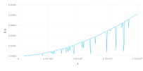
Or a second example...
# Let's look at the number of scatter events as a function of incident energy.
function mc_n_scatters(e0, mat)
cx=0
trajectory(gun(Electron, e0, 1.0e-6), bulk(mat)) do electron, region
cx += 1
end
return cx
end
plot(e0->mc_n_scatters(e0, mat), 1.0e3, 20.0e3)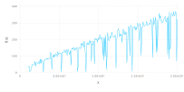
There is more but this should get you started. As always, the code is the ultimate resource and you have it in your hands. Please report any bugs you find at NeXLCore.
Appendix: Plotting with Gadfly
There are a number of helpful plotting methods to take an overhead look at various NeXLCore attributes.
Plot the X-ray energy for all transitions in all elements
using Gadfly
display(plot(collect(ktransitions), mode = :Energy))
display(plot(collect(ltransitions), mode = :Energy))
display(plot(collect(mtransitions), mode = :Energy))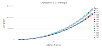 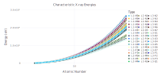
Plot the X-ray line weight for all transitions
display(plot(collect(ktransitions), mode = :Weight))
display(plot(collect(ltransitions), mode = :Weight))
display(plot(collect(mtransitions), mode = :Weight))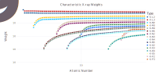 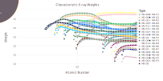
Plot the edge energy for all subshells in all elements.
display(plot(collect(ksubshells), :EdgeEnergy))
display(plot(collect(lsubshells), :EdgeEnergy))
display(plot(collect(msubshells), :EdgeEnergy))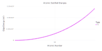 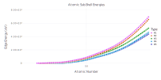
Plot the fluorescence yield for all subshells in all elements.
display(plot(collect(ksubshells), :FluorescenceYield))
display(plot(collect(lsubshells), :FluorescenceYield))
display(plot(collect(msubshells), :FluorescenceYield))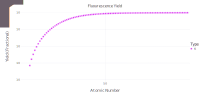 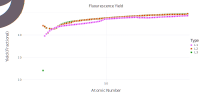 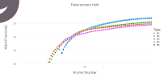
Finally, to compare MAC algorithms...
display(NeXLCore.compareMACs(n"C"))
display(NeXLCore.compareMACs(n"U"))
Or MAC algorithms one at a time...
display(plot(NeXLCore.FFASTDB, n"Ag"))
display(plot(NeXLCore.DTSA, n"Au"))
Or many elements at once...
plot(NeXLCore.FFASTDB, collect(keys(albite)),xmax=5.0e3)Or a Material MAC...
plot(NeXLCore.FFASTDB, [keys(albite)..., albite], xmax=5.0e3)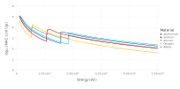